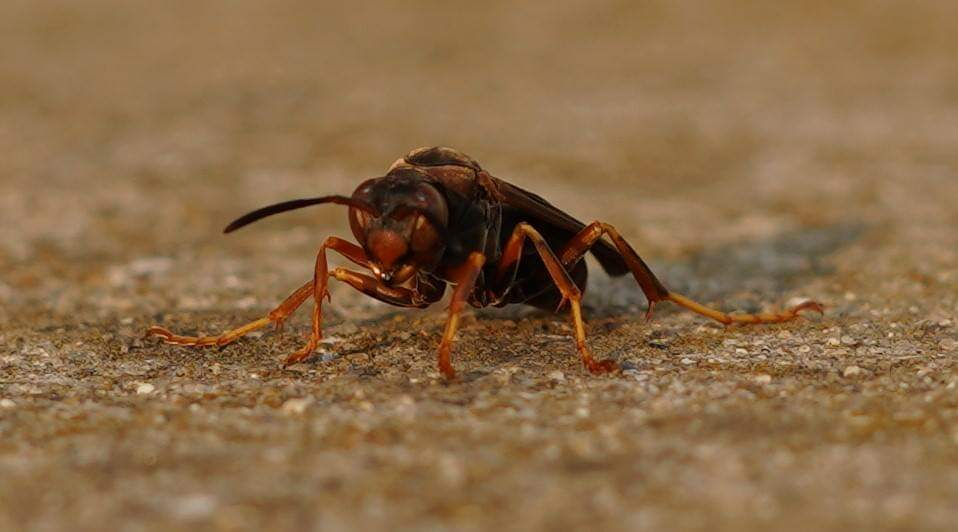

I am an avid photographer and love the Adobe suite!

We are at Penn State Erie, The Behrend College.
Here is a link to the Code View of our textAnalysis-Hub repository. We’ll even link that to the GitHub octokitty image (named "Octocat"):